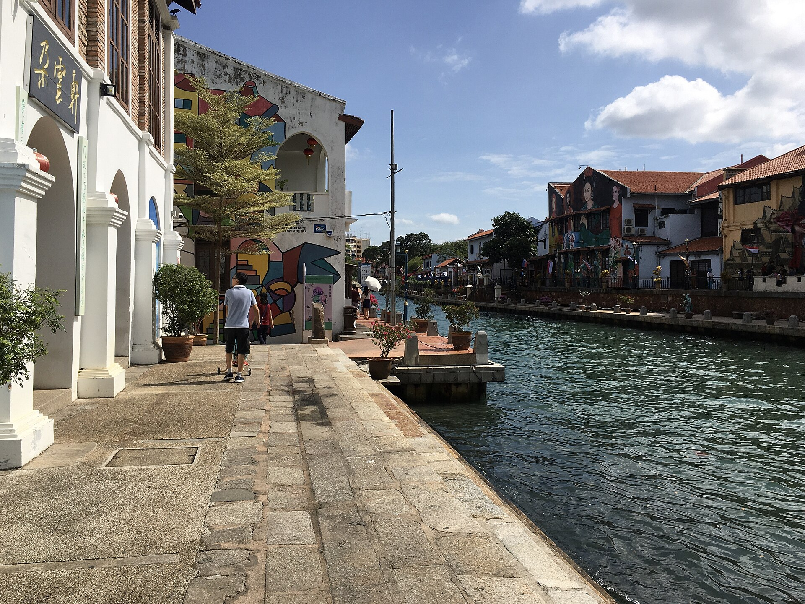

第 21 章
拍卖槌落下时
当争论从法律框架的冷静缝隙转入拍卖行的聚光灯下，故事便成了另一种硬通货。在拍卖这个行业里，一直都流传着一句话——我们是贩卖"故事"的人。
这句话出现在1998年佳士得亚洲艺术部一位资深专家的内部培训录音中。说这话的人叫詹姆斯·斯宾塞，当时他五十七岁，已经在拍卖行工作了二十三年。他培训的对象是一批新入职的初级专家——他们将在未来几年负责撰写图录、接待潜在买家、审查委托人的来源文件。

斯宾塞在录音里没有说完下半句。他停顿了一下，然后转向另一个话题。这句被截断的话后来被一位离职员工写进了回忆文章，在2004年发表在一本拍卖行业内部刊物上。文章没有引起太多关注。
但这句话本身的构造，恰好揭示了一个被整个行业默认的运作前提：拍卖行贩卖的那个“故事”，不是一个虚构的故事，而是一个经过筛选、组织和编码的信息集合。它的材料来源于物本身的物质痕迹、历代收藏者的叙述、过往交易的记录、学术鉴定的结论，以及——同样重要的——那些被有意省略的部分。
2001年3月，纽约苏富比春季拍卖的中国工艺品专场中，编号一三七的拍品引发了在场几位中国买家的注意。
拍品是一尊北齐时期的石灰岩佛首，高三十六厘米，图录标注为“响堂山样式”。图录中关于来源的叙述只有两行：“Property of a Lady, acquired in Paris, 1960s”。来源栏没有提及这位女士的姓名，没有说明她通过谁买到这尊佛首，也没有解释这尊佛首在她持有之前的流转历史。
但图录中关于美学判断的文字写了四段，详细分析了佛像面部的“北魏向隋唐过渡的典范特征”，嘴唇“含蓄收敛的笑意”，发髻“线条流畅不断续的刻工”，以及石灰岩表面“包浆自然温润，局部呈现淡褐色沁”。
拍卖结束后，一位竞拍失利的中国买家向苏富比提出查询，要求获知更多来源信息。卖方通过拍卖行转达的回复大意是：该女士已去世，她的子女在清理遗产时发现了这尊佛首，他们只知道母亲曾在六十年代居住于巴黎期间购买过一些中国艺术品，但不清楚更多细节。拍卖行补充说明，委托人的子女愿意出具一份书面陈述，确认佛首在他们母亲手中有“超过三十年”。
这个“超过三十年”在当时的行业惯例中，暗示着所有权已足够稳定，来源已足够“干净”。
买家没有再追问。不是因为他对这个解释完全满意，而是因为他知道，继续追问的收益是递减的。
他如果坚持要求更多证据，拍卖行可能会以“尊重委托人隐私”为由终止对话。如果他将此事诉诸媒体或外交渠道，他可能在未来被某些拍卖行列为不受欢迎的竞拍者——不是公开抵制，而是他发出的电话委托和书面竞拍申请会遭遇更慢的响应速度、更严格的押金要求，或者在竞拍结束后才收到确认。这些微小的操作差异，在行业内被称作“soft blacklisting”，没有明文规定，但从业者都能感知到它的存在。
这位买家的沉默，标志着市场生态中一种特定的权力关系：信息的主动权在卖方和拍卖行手中。他们决定哪些信息进入图录，哪些信息留在口头沟通中，哪些信息永不透露。竞拍者想要获得前两类信息，需要证明自己的“诚意”——通常意味着参与竞拍并遵守游戏规则。
而游戏规则的核心条款是：你不能在竞拍结束之后，利用拍卖行提供的信息来伤害拍卖行及其委托人的利益。在这条条款的约束下，买家每一次询问来源，都在默许一个不对等的信息契约——他获得的信息量，永远不足以构成举证的基础，但足以让他判断自己在法律和道德风险上的暴露程度。
这种不对称结构并非偶然产物。它是在过去四十年间，由多个市场主体反复博弈后形成的制度弹性空间。
在最基本的层面上，一件即将上拍的中国佛教文物的来源文件，通常要经过至少三道筛选。第一道在委托人手中：他决定向拍卖行披露哪些文件，保留哪些信息。有些委托人会完整移交自己掌握的所有记录，包括祖父留下的购买收据、银行保险柜的登记卡、律师信函。但更多情况下，委托人只是提供他认为“足够”的基础文件——一份多年前的拍卖图录复印件、一份泛黄的手写收据、一份保险公司出具的投保记录。至于这些文件是否覆盖了文物的完整流转链，委托人自己可能也并不清楚。
他在数十年前购得此物时，卖方告诉他的来源信息就不完整，而他没有进一步调查。
第二道筛选在拍卖行的专家手中。当一件中国佛教石刻被送到拍卖行，首先接触它的不是法律部门，而是部门专家。专家的工作是为这件作品定价、分类、命名，并为图录撰写艺术史评注。在这个过程中，他必然要审视来源文件。
如果他发现来源信息存在明显的漏洞——比如完全无法解释一件佛首如何从山西的山洞抵达巴黎的公寓——他会做出判断。他的判断标准不是法律意义上的“合法”与“非法”，而是可操作意义上的“能拍”与“不能拍”。这个判断涉及的因素包括：来源缺失的年代是否早于大多数法律公约、是否涉及仍在世的当事人、是否有媒体或学者已经在关注这件作品。如果他判断“能拍”，他会在写图录时小心措辞，将来源信息压缩到最中性、最精炼的形式，避免任何可能引发追问的措辞。
如果他判断“不能拍”，他会建议委托人在更小的地区性拍卖行、在更为低调的时间窗口、或者通过私人洽购的渠道出手。拒绝一件拍品的决定，通常不建立在道德判断上，而是建立在风险评估上：“这还是能卖的，但不应该在我们的平台上卖。”
第三道筛选在拍卖行的法律合规部门。大型拍卖行在二十世纪九十年代后期开始陆续建立合规部门，专门审查拍品的来源是否符合公司政策、是否符合拍卖地所在国的法律。合规官会核查被盗文物数据库、会要求委托人签署保证书、会检查出口许可证。但合规审查的时间范围是有限的——它只关心这件作品在最近几十年的流转记录是否合法。
对于数十年前甚至更早期的来源缺失，合规官使用的术语是“historical provenance gaps”（历史性来源断层）。这个术语本身已经暗含了判断：某些断层是“历史性”的，即它们发生在遥远的过去，发生在不同的法律时代，发生时的那套规则和今天不一样，因此我们不能用今天的标准去衡量它们。这种思维的底层逻辑，与法律上的“不溯及既往”原则深度呼应。只不过，法院适用这一原则需要经过庭审辩论，而拍卖行适用它时，只需要在内部备忘录中写上一行字。
2006年，某拍卖行的法律部门在一份关于一尊天龙山菩萨头像的内部备忘录中，写下了这样一段话——这份备忘录后来因一位前雇员的诉讼而意外公开。“此件的早期来源无法追溯至离开中国的时间点。这构成一个技术性的来源断层。但在当前政策框架内，该断层属于可接受范围，原因如下：(1）委托人持有时间已超过二十五年；(2）公开记录中未发现针对此件的具体索赔主张；(3）同类物品在国际市场上流通已逾半个世纪，形成了事实上的市场接受度。法律风险：低。声誉风险：中低。建议：继续上拍，来源栏措辞保持概括性。”
备忘录中使用了“技术性来源断层”这一短语，值得读者品读。它暗示，这个缝隙是技术性的而非实质性的，是程序上的而非道德上的，因此可以用技术手段来处理。这个“技术手段”就是措辞——将断层的存在包装成一种业内公认的表述惯例，让它在图录中看起来不像漏洞，而像是标准格式的一部分。
备忘录被公开后，一些艺术法律师和文物追索组织将其作为证据，试图证明大型拍卖行在系统性忽视来源问题。拍卖行的回应显得克制：它指出备忘录恰恰证明了公司有完善的内部审查机制，而审查结论基于现行法律和行业标准而作出。它没有否认来源断层的存在，但坚持认为在这个断层上建立起来的所有权——经过了二十五年、经过了多次转手、经过了一个发达国家的合法交易系统——已经获得了不应被轻易否定的效力。
这种对峙状态，正是整个争议的结构性僵局的缩影：一方依据的是未经破坏的原始归属和断裂时的不公正性；另一方依据的是时间积累起来的既定事实和市场交易产生的新权利。
两套逻辑在道德维度上无法调和，在法律维度上也找不到裁判标准。唯一能将它们同时容纳的场所，正是那个被备忘录含蓄提及的“市场接受度”。市场接受度不是一个法律概念，不是一项道德原则，而是一个统计事实——当足够多的同类物品在足够长的时间里被足够多的参与者买卖，一种接受就在行动中形成了。它不需被宣布，也不需被论证。它存在于每一本图录的措辞中，存在于每一次落槌的回响中。
一个更具穿透性的案例发生在2009年。其时，巴黎一家拍卖行上拍了一组三件的唐代陶俑，标注来源为“欧洲私人收藏，购于香港，1980年代”。
拍卖前两天，一位独立研究中国流失文物的法国学者向拍卖行发去邮件，声称他掌握证据，证明这三件陶俑出自河南某座已知墓葬，且很可能是在1980年代通过走私渠道离开中国。他附上了一份田野调查笔记的扫描件，其中记录了当地村民对八十年代初期盗掘活动的描述。笔记中没有照片，没有具体的盗掘日期，没有陶俑与墓葬之间一对一的物证链接。它是一份间接证据。
拍卖行在接到邮件后召开了内部会议。会议记录后来被泄露给了一家法国调查媒体。记录显示，拍卖行的合规官承认学者的来信“提出了值得关注的问题”，但指出“问题的性质是指向性的，而非结论性的”。艺术部的专家则补充称，这三件陶俑的艺术风格和烧制技法确实指向河南地区，但类似风格的陶俑在陕西和山西也有出土，因此仅凭风格无法锁定具体墓葬。
在讨论可能的应对方案时，一位主管提出了一个被记录为“方案B”的做法：主动联系中国文物部门，询问对方是否有具体证据支持对这三件陶俑的归还主张。如果有，愿意协商；如果没有，拍卖按期进行。方案B被认为是展示诚意的姿态，同时在法律上安全——主动权交给了对方，而对方很可能无法在四十八小时内拿出足以在英国或法国法庭上成立的具体证据。
这个预测是准确的。中国文物部门在两天内无法组织起足够精确的证据链。
拍卖如期举行。三件陶俑分别以七万八千欧元、十一万欧元和九万六千欧元成交。买家的身份未公开。
事后，这位法国学者在他的博客上写了一篇长文，语气疲倦。他写道，他在这个领域工作了十五年，最深刻的体会是：证据的标准由占有物的一方设定。文物在离开原境的过程中，精确的出土信息就已经被抹去。而抹去这些信息，恰恰是为了让文物能够流入市场而不被追踪。数十年后，当研究者试图重建这条断裂的链条，他被要求提供原境信息。但原境信息正是那些最初从墓地中盗取陶俑的人所消除的。他最后写道：“他们破坏线索，然后把线索缺失当作辩护理由。”
这几句话触及了来源迷雾的最深层结构。它不是一种偶然的、由于年代久远而自然产生的信息缺失，而是一种被主动生产的、具有商业功能的社会产物。
文物从中国石窟、寺庙、墓葬中被切割、撬取、装箱的那一刻起，它的来源信息就开始被剥离。古董商在组织出口时，会有意避免详述出土位置，因为出土位置一旦被记录在案，将来可能成为追索的切入路径。海外买家在购藏时，常常主动克制对来源细节的追问，因为他们知道有些问题不被追问，对他们自己更为有利。这种集体性的“不问”和“不说”，经过几十年的积累，固化为一套行业语言——一种可以精确识别、描述和定价一件艺术品的语言，唯独不在来源问题上过多停留。
2012年，纽约亚洲协会举办了一场关于中国佛教艺术收藏史的学术讨论会。会上，一位来自伦敦的拍卖行前雇员做了一个简短发言。
他说：“在我任职的十二年里，我经手过二十多件源自天龙山、响堂山和龙门的石刻。没有一件的来源记录能够追溯到它脱离洞窟的那一刻。
但我可以告诉你每一件石刻的雕刻风格、石料地质特征，以及它在最近三次拍卖中的估价变化曲线。”他发言时没有带讲稿，语调平缓，像在叙述一个与他无关的行业数据。
观众席上一位博物馆策展人举手提问：“你是怎么处理这个落差的？”发言人想了想，回答大意是：到了第三年的时候，他就不再觉得这是落差了。
“到了第三年就不觉得是落差”——这句话描述的是一种制度化的适应。拍卖行的来源叙述体系有一种自洽的力量，它通过重复、格式化和工作语言的日常使用，将来源断层的道德意味淡化，转化为一种中性的、职业化的认知习惯。竞拍者逐渐学会阅读这套语言的潜台词：他们说“据传来自天龙山”时，可能是真的，可能是说谎，但大多数情况下是两者之间某个无法确定的位置——而这恰好是各方都能继续游戏的认知水平。不再有人期待更多。也不再有人感到不适。
这种适应绝非仅限于拍卖行。竞拍者，尤其是重复参与竞拍的职业买家和经纪人，也经历着同样的认知调整过程。
一位在上海从事回流文物经纪的从业者曾在2016年的行业论坛上谈起这个学习过程。他把这个过程比作学会品酒的一套新标准：“你刚入行时会想着这杯酒从哪个庄园来、年份对不对。后来你明白了，这杯酒的价值取决于它在专业品鉴体系里的评分。至于它的完整仓储链和交易记录，那是以后讲给买你酒的人听的故事，不是你现在验证它来源的依据。”
他的听众都是同行，人群中发出轻微的笑声。那笑声不带有恶意，也不带有醒悟的锋芒。它只是表明在座的人理解他在说什么。
这套品酒故事还是进入了另一个层面的循环。2008年至2018年期间，三家主要国际拍卖行在中国香港和纽约的佛教艺术专场中，多次将同一批藏品反复上拍。
其中一尊北齐观音立像在十年内转手三次，每次的来源栏都略有不同。第一次出现时（2008年），标注为“欧洲私人收藏”。第二次（2012年），标注为“英国私人收藏，2008年购自纽约拍卖”。
第三次（2017年），标注为“重要亚洲收藏，2012年购自伦敦拍卖，2008年纽约拍卖”。三次叠加上去，这尊立像有了一个不断增厚的来源记录。最初的模糊——“欧洲私人收藏”——被后续的明确交易所覆盖。
多年之后，它的来源栏开头可能不会再写“欧洲私人收藏”，而直接以“2017年香港拍卖”作为可追溯的起点。更早的那段模糊历史，将在新的流通中渐渐被遗忘。
被遗忘的不仅是文物的早期流转路径，也是一种归属记忆。一尊北齐观音立像，公元六世纪在河北某处被雕刻成形，十五个世纪后，它在纽约和伦敦之间往返三次，每次切手都附带着发票和拍卖图录，但没有任何一张纸记录它离开中国的那个时刻。
市场为它制造的历史，并不是它原始的历史，而是一套为了让它安心存在于市场中的替代历史。
这两部历史的相互关系是消极的：替代历史越完整，原初历史的痕迹就越浅，直至彻底不可辨认。这并不意味着没有人试图打破这种替代。
2014年至2017年间，一个由美国、英国和中国学者组成的联合研究项目，系统性地对二百余件标注为“天龙山样式”的市场流通佛像进行了风格比对和断代分析。研究的初步结论极具爆破性：在这二百余件作品中，约百分之六十二可以在天龙山已知洞窟的老照片中找到高度吻合的原位匹配。这意味着它们几乎确定无疑地来自这个石窟群。
但只有不到百分之八的佛像在拍卖图录中明确标注了“天龙山”字样。其余的大部分使用了“北齐样式”或“山西地区”这类更为模糊的地理标签。模糊标签的存在，降低了每一件具体作品被定位到具体洞窟的概率，从而降低了追索行动能够锁定具体物件的概率。
这不是巧合，而是策略。研究团队在一篇发表在学术期刊上的论文中冷静地陈述了发现。论文建议拍卖行业自愿采纳更透明的来源标注标准，将风格比对的研究成果纳入图录信息。论文发表后，两家主要拍卖行分别以非正式方式回应了媒体查询。
一家的回应大意是，拍卖行欢迎学术研究，但图录信息的刊载受到委托人隐私协议和消费者保护法律的约束，不能未经委托人许可就公开可能影响其物权安全的信息。另一家的回应则更为直接：拍卖行不是学术机构，其出版物的首要目的是服务于买卖双方的信息需求，而不是服务于学术研究的完整覆盖。
这两则回应的共同特征是，它们将来源透明问题界定为委托人权利的边界和拍卖行法定义务的范围——而非关乎历史正义的公共议题。
来自拍卖行内部的消息透露，在研究论文发布之后的几次行业闭门研讨会上，来源审查的议题被反复讨论，但方向并非如何提高透明度，而是如何管理与日俱增的学术曝光所带来的声誉风险。一位与会者告诉媒体：“大家担忧的不是某一件东西被证明是盗凿的，而是太多东西被证明是盗凿的。到了那个地步，整个天龙山收藏类别的市场前景都会受影响。”
这段话的潜台词异常冷静：单一案例的追索可以被当作例外来处理，但系统性的真相一旦被确证，将动摇一整个类别的流通合法性。
为了避免那一时刻的到来，市场需要维持迷雾。迷雾的维持不是阴谋论意义上的合谋，而是一种各主体在各自利益驱动下自然形成的集体行为——委托人不主动披露，拍卖行不深入追查，买家不追问到底。每个人都在自己的环节上做出了理性选择，而系统的结果却是一道厚重的模糊地带。
2018年秋季，一条新闻短暂地挤进了艺术媒体的头条。一位西班牙私人藏家在整理已故父亲的遗产时，发现了一尊木质观音坐像，背后贴着一张手写的标签，用繁体中文写着一行字：“开元寺，汕頭，民国廿六年九月移出。”标签没有署名。藏家将照片发给巴塞罗那一家拍卖行进行评估。拍卖行的亚洲艺术专家很快辨认出，这尊观音像的风格属于宋代福建地区。但“民国廿六年九月移出”这一条信息——1937年9月——是一个非常接近中日战争全面爆发前夕的精确时间点。专家建议藏家在拍卖前寻求法律意见。藏家照做了。
律师分析了相关法律，认为这尊佛像的流出时间远早于任何可适用的国际公约和中国文物保护法规，因此在西班牙法律框架内可以合法出售。
但消息走漏了。一位在香港的古董商看到了媒体照片，声称他在二十年前曾在曼谷见过这尊观音像，当时它由一个潮州华侨家族持有，对方口述的历史是：这尊像是家族先人在日军占领汕头前夕，从开元寺僧人手中购得并随身带往东南亚逃难的。这个口述版本与标签上的“移出”二字在叙事上严丝合缝——如果属实，它记录的是一次购买和携带，而非盗凿。它甚至可能在道德上带有正面色调：在战乱来临前将圣像带往安全之地。
然而，汕头开元寺方面在记者致电查询时表示，寺院档案中没有关于这尊观音像流失的记录，也没有办法证实或证伪那个口述故事。
寺院的一位僧人说了一句被记者引用为电头的话：“我们只能感谢那位施主的后人妥善保存了佛像，如果有一天因缘具足，希望它能回到寺院。我们不会去打官司。”
这最后四个字——“不会去打官司”——比整部法律公约更精确地说明了原属社区在当代市场机制面前的处境。他们缺乏能上法庭的证据，缺乏跨国的法务资源，更缺乏一种能将慈悲的诉求翻译为法律主张的制度通道。观音像最终通过私下协商，以低于市场价的价格转让给了一位来自 weist三者，一位居住在新加坡的中国企业家。这位企业家在接受本地中文报纸采访时说了一句话：“我是信佛的人，这是佛回到华人手里，这样就好。”
“这样就好”这四个字，在华人社会的情感结构中有其特殊的重量。它表明一种放弃追究的接受状态，一种在无法达成理想结果时退而其形的自我安慰。
这位企业家没有要求查看任何来源文件。即使对这些文件的来历心怀疑问。他买的不是依法返还的正义，而是信众与佛像之间不被法律和市场定义的关系——一种存在于交割之后的、由新的持有人不加质疑地接受的归属感。
问题是，这种归属感是真实的吗，抑或只是市场的另一种包装？同一时期，拍卖行业内部流传着一份据称来自某家大型拍卖行风险评估部门的内部培训材料。材料的真实性未能被独立证实，但其内容与公开资料中的行业逻辑高度吻合。
材料将涉及中国佛教文物的拍卖风险分为四个等级：“绿灯”（来源完整，1950年之前流出，有多次公开拍卖记录）、“黄灯”（来源有断口，但有至少一次1970年之前的公开记录）、“橙灯”（有断口，无早期公开记录，但有至少二十五年持有历史）和“红灯”（有明确被盗记录、或者与已知被盗文物数据库吻合）。
材料还附带了几组估算数据。据这材料引述的不完全统计，在2015年至2020年期间全球上拍的中国佛教石雕中，真正属于“绿灯”级别的不到四分之一。
材料建议专家在接到委托时，先不急于做出上拍决定，而是用两周到一个月的时间进行数据库核查——不是为了发现真相，而是为了确认风险等级，以便准确评估保险成本和宣传策略。
如果这份材料的真实性可以确认，那么它揭示了一个非吊诡的局面：拍卖行在持续完善风险管理机制，同时并没有改善对来源真实性的核实。增加的是精算风险的能力，而非澄清历史的能力。这两者走得越远，市场的运作就越自足于一个封闭的内部连贯性——它不必与历史真相保持一致，只需与自身积累的交易记录和保险条款保持一致。
这就是解释权在市场端的一次深刻转手。法律将争议推给市场，市场接手后没有解争议，而是用计价密度替代了真相密度。在这个替代的过程中，文物继续流通，价格继续攀升，模糊继续被维护。
而买方、卖方和中介共同从这套机制中获得各自所需——卖方变现，买方获得收藏和叙事的满足感，拍卖行抽取佣金。谁在承受代价？那个失去原境、失去记忆、只剩下石灰岩本身在聚光灯下的物。它继续沉默，在每一次竞价的间隙中，沉默得如同它一千五百年前刚刚被工匠放下銮刀的那一刻。只不过现在，照亮它的不是佛前的油灯，而是拍台上的聚光灯和买家手机屏幕的荧光。
2023年深秋，纽约一个萧瑟的星期二早晨，又有一尊标注为“中国北朝时期石灰岩佛首”的石刻进入了一家拍卖行的仓库。仓库管理员用扫码器读取标签上的条形码，系统弹出一个窗口：来源等级——橙灯；保险估值——待定；图录措辞建议——参见模板B。他推着推车将它送进货架，关上了灯。佛首在黑暗中等待着。